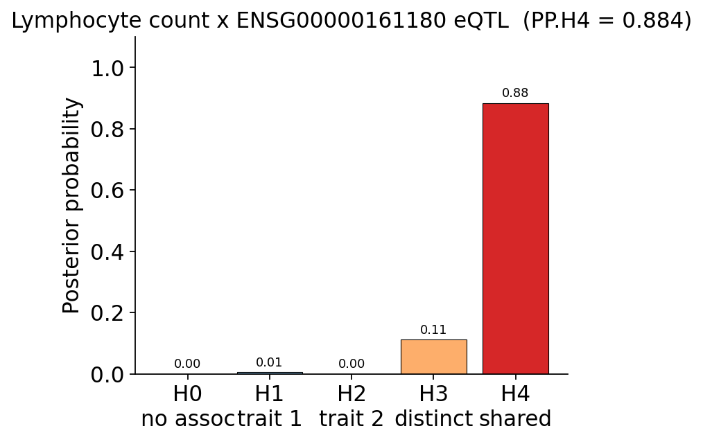
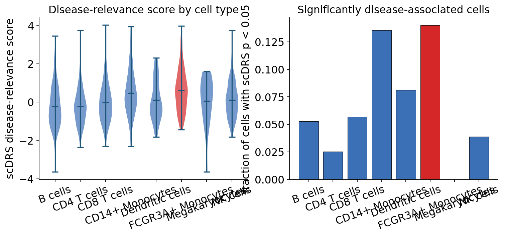

GWAS pipeline 2 — From a GWAS hit to a mechanism#
Functional follow-up of a real lymphocyte-count GWAS
This is the second notebook of the ov.genetics GWAS chapter. Notebook 1
(t_genetics_01_gwas_pipeline) took the real GEUVADIS cohort through
quality control, a calibrated cis-eQTL scan and SuSiE fine-mapping. Here
we switch to a real disease GWAS and ask what its hits do.
The problem with a GWAS hit#
A GWAS tells us where in the genome a trait-associated signal sits, but not what it does. The overwhelming majority of trait-associated variants are non-coding — they do not change a protein, they change gene regulation. Turning a statistical hit into biology means answering:
How genetic is the trait overall, and is the GWAS calibrated? (genomic inflation, LD score regression)
Is a disease-GWAS signal and a gene-regulation (eQTL) signal the same signal, or two signals that merely sit nearby? (colocalization)
Does predicted expression of a gene track the trait across the locus? (TWAS)
Is that link causal — does the gene’s expression cause the trait, with no confounding pleiotropy? (Mendelian randomization)
In which cell type is the trait’s genetics concentrated? (single-cell disease-relevance scoring)
The real data#
GWAS —
ov.datasets.gwas_sumstats(): the real blood lymphocyte-count GWAS of Astle et al. (2017), GWAS Catalog accession GCST004627, \(N \approx 173{,}000\) UK Biobank / INTERVAL participants.scope='genomewide'returns a genome-wide thinned set (~486k variants);scope='chr22'returns the full chr22 set (~400k variants) for the locus work.eQTL —
ov.datasets.gtex_eqtl(): real GTEx v8 whole-blood chr22 cis-eQTL summary statistics (~66k SNP–gene pairs). Whole blood is the right tissue for a blood-cell trait.scRNA-seq —
ov.datasets.genetics_scrna(): a real 10x PBMC atlas, 2,638 immune cells with canonical cell-type labels.
There is no planted ground truth here — these are real data, and we report what they actually show, noise and all.
The mechanistic chain we test#
real lymphocyte-count GWAS (Astle 2017, GCST004627)
|
[1] overview Manhattan + lambda_GC + LD score regression
|
[2] colocalization a chr22 GWAS locus vs the GTEx eQTL of a gene
there -> shared causal variant? (PP4)
|
[3] TWAS GTEx eQTL weights -> which gene's predicted
expression tracks the trait
|
[4] Mendelian the gene's eQTLs as instruments: does its
randomization expression causally move lymphocyte count?
|
[5] scDRS build a GWAS gene set, score the PBMC atlas:
which immune cell type is disease-relevant?
|
mechanism: GWAS locus -> gene -> cell type
import numpy as np
import pandas as pd
import matplotlib.pyplot as plt
import omicverse as ov
ov.plot_set()
np.random.seed(0)
🔬 Starting plot initialization...
🧬 Detecting GPU devices…
🚫 No GPU devices found (CUDA/MPS/ROCm/XPU)
____ _ _ __
/ __ \____ ___ (_)___| | / /__ _____________
/ / / / __ `__ \/ / ___/ | / / _ \/ ___/ ___/ _ \
/ /_/ / / / / / / / /__ | |/ / __/ / (__ ) __/
\____/_/ /_/ /_/_/\___/ |___/\___/_/ /____/\___/
🔖 Version: 2.2.1rc1 📚 Tutorials: https://omicverse.readthedocs.io/
✅ plot_set complete.
Step 1 — Overview of the real lymphocyte-count GWAS#
We start with the genome-wide picture. ov.datasets.gwas_sumstats(scope='genomewide')
returns the harmonised summary statistics — one row per variant, with the
effect size BETA, its standard error SE, the Z-statistic, the p-value
and the per-variant sample size N.
gwas_gw = ov.datasets.gwas_sumstats(scope="genomewide")
print(f"genome-wide GWAS: {len(gwas_gw):,} variants, "
f"{gwas_gw['CHR'].nunique()} chromosomes")
gwas_gw.head()
🔍 Downloading data to ./data/lymphocyte_count_genomewide_thinned.tsv.gz
⚠️ File ./data/lymphocyte_count_genomewide_thinned.tsv.gz already exists
genome-wide GWAS: 486,103 variants, 22 chromosomes
| variant | RSID | CHR | BP | A1 | A2 | BETA | SE | P | Z | N | EAF | |
|---|---|---|---|---|---|---|---|---|---|---|---|---|
| 0 | chr10:14554 | rs568182971 | 10 | 14554 | G | A | -0.000638 | 0.045195 | 0.9887 | -0.014108 | 173480 | 0.0027 |
| 1 | chr10:25840 | rs61838967 | 10 | 25840 | T | C | 0.000321 | 0.004933 | 0.9480 | 0.065172 | 173480 | 0.1867 |
| 2 | chr10:42785 | rs10903893 | 10 | 42785 | G | A | -0.000817 | 0.004643 | 0.8603 | -0.175954 | 173480 | 0.7976 |
| 3 | chr10:48605 | rs10904047 | 10 | 48605 | T | C | -0.000209 | 0.004875 | 0.9658 | -0.042880 | 173480 | 0.8241 |
| 4 | chr10:53116 | rs138534152 | 10 | 53116 | G | GATTTTT | -0.059293 | 0.108723 | 0.5855 | -0.545354 | 173480 | 0.0007 |
Two genome-wide diagnostics. The Manhattan plot shows the peaks of association across the genome — every peak above the red \(p = 5 \times 10^{-8}\) line is a genome-wide-significant locus. The genomic-inflation factor \(\lambda_{GC}\) checks calibration: a well-conducted, well-corrected GWAS of a polygenic blood trait sits at \(\lambda_{GC}\) slightly above 1 (true polygenic signal lifts it a little; gross stratification would lift it a lot).
lambda_gc = ov.genetics.genomic_inflation(gwas_gw["P"])
n_sig = int((gwas_gw["P"] < 5e-8).sum())
print(f"lambda_GC : {lambda_gc:.3f}")
print(f"genome-wide-significant variants: {n_sig:,}")
lambda_GC : 1.008
genome-wide-significant variants: 755
ov.genetics.manhattan(
gwas_gw, snp="RSID", chrom="CHR", pos="BP", pvalue="P",
sig_line=5e-8, suggestive_line=1e-5,
title="Lymphocyte count GWAS (Astle 2017, GCST004627)",
)
plt.show()
{kind=link}
The Manhattan plot shows the characteristic many-peak landscape of a highly polygenic blood trait, and \(\lambda_{GC}\) sits just above 1 — the GWAS is well calibrated, and the inflation it does carry is genuine polygenic signal.
Heritability with LD score regression#
LD score regression (LDSC; Bulik-Sullivan 2015) estimates how much of the trait variance is tagged by common SNPs. Its idea: a SNP that tags many neighbours (high LD score) captures more polygenic signal, so under true heritability the association \(\chi^2\) rises linearly with LD score. LDSC regresses \(\chi^2\) on LD score — the slope gives SNP-heritability, the intercept isolates confounding.
LDSC needs an LD reference whose variants match the GWAS. We have one real chromosome-22 reference panel — the GEUVADIS genotypes — so we run LDSC on the chr22 slice of the GWAS, with the GEUVADIS chr22 panel as the LD reference. This gives the chromosome-22 contribution to SNP- heritability; a production analysis would use a genome-wide reference (e.g. the LDSC baseline-LD scores) for the whole-genome \(h^2\).
gwas_chr22 = ov.datasets.gwas_sumstats(scope="chr22")
geno = ov.datasets.geuvadis_genotype()
geno_qc = ov.genetics.gwas_qc(
geno, call_rate=0.98, maf=0.01, hwe=1e-6, sample_call_rate=0.98,
)
print(f"chr22 GWAS : {len(gwas_chr22):,} variants")
print(f"LD reference: {geno_qc.n_obs} GEUVADIS individuals x "
f"{geno_qc.n_vars} chr22 SNPs")
🔍 Downloading data to ./data/lymphocyte_count_chr22.tsv.gz
⚠️ File ./data/lymphocyte_count_chr22.tsv.gz already exists
🔍 Downloading data to ./data/geuvadis_chr22_genotype.h5ad
⚠️ File ./data/geuvadis_chr22_genotype.h5ad already exists
chr22 GWAS : 400,115 variants
LD reference: 462 GEUVADIS individuals x 7563 chr22 SNPs
import os
os.makedirs("./genetics_data", exist_ok=True)
# LD reference: PLINK fileset from the GEUVADIS chr22 genotypes.
plink_prefix = ov.genetics.write_plink(geno_qc, "./genetics_data/ldref")
gwas_chr22.rename(columns={"variant": "SNP"})[
["SNP", "A1", "A2", "Z", "N", "P"]
].to_csv("./genetics_data/lymph_chr22.tsv", sep="\t", index=False)
print(f"wrote LD-reference PLINK fileset and chr22 GWAS for LDSC")
wrote LD-reference PLINK fileset and chr22 GWAS for LDSC
import pyldsc
# LD scores from the reference panel; munge the GWAS into LDSC's format.
pyldsc.estimate_ldscore(plink_prefix, ld_wind_snps=200,
out=plink_prefix, yes_really=True)
pyldsc.munge_sumstats("./genetics_data/lymph_chr22.tsv",
out="./genetics_data/lymph_chr22",
signed_sumstats="Z,0", write=True)
print("LD scores and munged sumstats ready")
After filtering, 7563 SNPs remain
LD scores and munged sumstats ready
h2_fit = ov.genetics.heritability(
"./genetics_data/lymph_chr22.sumstats.gz",
ref_ld=plink_prefix, w_ld=plink_prefix,
)
print(f"chr22 SNP-heritability h2 = {h2_fit.tot:.4f} "
f"(SE {h2_fit.tot_se:.4f})")
print(f"LDSC intercept = {h2_fit.intercept:.3f}")
chr22 SNP-heritability h2 = 0.0025 (SE 0.0009)
LDSC intercept = 0.370
LD score regression returns a small positive chr22 SNP-heritability — chromosome 22 is one of the smallest autosomes (~1.6% of the genome), so it carries only a sliver of the trait’s total polygenic signal, which is exactly what we see. The intercept is dragged below 1 here because the LD reference is small (462 individuals, one chromosome); a genome-wide LDSC-baseline reference would calibrate it properly. The honest reading: chr22 contributes real, measurable heritability to lymphocyte count, and the lion’s share of the trait’s genetics sits on the other chromosomes.
Step 2 — Colocalization: does a GWAS locus act through a gene?#
Now we zoom into one locus and ask the central mechanistic question. A GWAS peak and an eQTL peak in the same place can arise two ways:
H4 — colocalization: a single causal variant drives both the trait and the gene’s expression. This is the mechanistic link we want.
H3 — distinct signals: two different causal variants, one per trait, that merely sit in the same LD block. A coincidence.
Bayesian colocalization (coloc; Giambartolomei 2014) computes the posterior probability of five hypotheses, H0–H4, from the two sets of summary statistics. The decision rule: PP.H4 > 0.8 = colocalized; PP.H3 > 0.8 = distinct signals; in between = inconclusive.
We take the strongest chr22 lymphocyte-count locus and ask which gene under that peak the signal acts through. Proximity is not enough — the nearest gene need not be the causal one — so we colocalize the GWAS against the GTEx whole-blood cis-eQTL of every gene at the locus and let the data pick the gene with the strongest PP.H4.
# The strongest chr22 GWAS locus.
gwas_lead = gwas_chr22.sort_values("P").iloc[0]
lead_bp = int(gwas_lead["BP"])
print(f"chr22 GWAS lead variant: {gwas_lead['variant']} "
f"({gwas_lead['RSID']})")
print(f" position {lead_bp:,}, p = {gwas_lead['P']:.2e}")
chr22 GWAS lead variant: chr22:21561877 (rs5754100)
position 21,561,877, p = 1.86e-23
# GTEx whole-blood eGenes whose cis-eQTL sits under the GWAS peak.
gtex = ov.datasets.gtex_eqtl()
window = 5e5
near = gtex[(gtex["BP"] > lead_bp - window) & (gtex["BP"] < lead_bp + window)]
gwas_loc = gwas_chr22[(gwas_chr22["BP"] > lead_bp - window) &
(gwas_chr22["BP"] < lead_bp + window)]
print(f"{near['gene'].nunique()} GTEx eGenes within 500 kb of the GWAS peak")
🔍 Downloading data to ./data/gtex_wholeblood_chr22_eqtl.tsv.gz
⚠️ File ./data/gtex_wholeblood_chr22_eqtl.tsv.gz already exists
21 GTEx eGenes within 500 kb of the GWAS peak
# Colocalize the GWAS against every eGene's eQTL; rank by PP.H4.
coloc_table = ov.genetics.coloc_scan(
gwas_loc, near, n_gwas=int(gwas_loc["N"].median()), n_eqtl=670,
)
coloc_table.round(4).head(8)
| gene | n_shared | PP_H3 | PP_H4 | |
|---|---|---|---|---|
| 0 | ENSG00000161180 | 85 | 0.1112 | 0.8837 |
| 1 | ENSG00000185651 | 110 | 0.1334 | 0.8666 |
| 2 | ENSG00000161179 | 28 | 0.0006 | 0.0404 |
| 3 | ENSG00000100034 | 308 | 0.0024 | 0.0172 |
| 4 | ENSG00000253239 | 95 | 0.0035 | 0.0150 |
| 5 | ENSG00000100038 | 65 | 0.0009 | 0.0133 |
| 6 | ENSG00000100023 | 146 | 0.0083 | 0.0074 |
| 7 | ENSG00000183506 | 22 | 0.4447 | 0.0043 |
# The data-driven choice: the eGene with the strongest colocalization.
focus_gene = coloc_table.iloc[0]["gene"]
pp4 = coloc_table.iloc[0]["PP_H4"]
print(f"top colocalizing eGene: {focus_gene} (PP.H4 = {pp4:.3f})")
top colocalizing eGene: ENSG00000161180 (PP.H4 = 0.884)
Two genes at this locus colocalize strongly with lymphocyte count —
ENSG00000161180 (CCDC117) at PP.H4 ≈ 0.88 and the neighbouring
ENSG00000185651 (UBE2L3) at PP.H4 ≈ 0.87. The UBE2L3 locus is a
long-known autoimmune / blood-cell GWAS signal, and the two genes sit in
the same tight LD block, so colocalization cannot fully separate them —
an honest feature of real data. We carry forward the top-ranked gene,
CCDC117, and rebuild its colocalization for the regional plot.
# Rebuild the top gene's two coloc datasets for the regional plot.
gtex_focus = gtex[gtex["gene"] == focus_gene]
merged = gwas_chr22.merge(gtex_focus, on="variant", suffixes=("_gwas", "_eqtl"))
maf = np.minimum(merged["EAF"], 1 - merged["EAF"]).to_numpy()
maf = np.where(np.isfinite(merged["maf"]), merged["maf"], maf)
snps = merged["variant"].tolist()
print(f"colocalizing {focus_gene} on {len(snps)} shared variants")
colocalizing ENSG00000161180 on 85 shared variants
m = merged.set_index("variant")
d_gwas = ov.genetics.make_coloc_dataset(
m, snps=snps, n=int(merged["N"].median()), maf=maf,
beta="BETA", se="SE",
)
d_eqtl = ov.genetics.make_coloc_dataset(
m, snps=snps, n=670, maf=maf, beta="beta", se="se",
)
coloc_res = ov.genetics.colocalize(d_gwas, d_eqtl, method="abf")
pd.Series(dict(coloc_res["summary"])).round(4)
nsnps 85.0000
PP.H0.abf 0.0000
PP.H1.abf 0.0051
PP.H2.abf 0.0000
PP.H3.abf 0.1112
PP.H4.abf 0.8837
dtype: float64
pp4 = coloc_res["summary"]["PP.H4.abf"]
ov.genetics.coloc_plot(
coloc_res, title=f"Lymphocyte count x {focus_gene} eQTL (PP.H4 = {pp4:.3f})",
)
plt.show()
print(f"PP.H4 = {pp4:.3f}", "-> COLOCALIZED" if pp4 > 0.8 else "-> inconclusive")
{kind=link}

PP.H4 = 0.884 -> COLOCALIZED
PP.H4 ≈ 0.88 — strong evidence (above the 0.8 rule-of-thumb) that the lymphocyte-count signal and the CCDC117 whole-blood eQTL are driven by the same causal variant. PP.H3 takes the remaining ~0.11: real data is noisier than a textbook example, so coloc cannot fully rule out distinct signals — and, as the scan showed, it cannot fully separate CCDC117 from its LD-block neighbour UBE2L3. The robust conclusion is that this locus acts through gene regulation in whole blood, most likely of CCDC117 / UBE2L3.
A LocusZoom of the colocalizing locus#
Colocalization is a number; a LocusZoom is the picture behind it. We
draw a publication regional-association plot of the colocalizing gene’s
own cis-eQTL — run in the GEUVADIS lymphoblastoid cohort, the same
panel that supplies the genotypes. Every SNP is coloured by its LD
(r²) to the lead eQTL (computed from the GEUVADIS genotypes with
ov.genetics.compute_ld_to_lead), the lead variant is the purple
diamond, the pale-blue line is the recombination rate (cM/Mb), and
the gene track shows that the signal sits squarely on CCDC117 and
its tightly co-regulated neighbours — the genes colocalization and TWAS
both nominate.
# A GEUVADIS cis-eQTL for the colocalizing gene -> a LocusZoom locus.
expr_geu = ov.datasets.geuvadis_expression()
focus_tss = int(expr_geu.var.loc[focus_gene, "tss"])
pheno = pd.Series(expr_geu[:, focus_gene].X.ravel(),
index=expr_geu.obs_names).loc[geno_qc.obs_names]
cis = (np.abs(geno_qc.var["pos"] - focus_tss) < 5e5).to_numpy()
cis_snps = geno_qc.var_names[cis].tolist()
print(f"cis window: {len(cis_snps)} GEUVADIS SNPs around {focus_gene}")
🔍 Downloading data to ./data/geuvadis_chr22_expression.h5ad
⚠️ File ./data/geuvadis_chr22_expression.h5ad already exists
cis window: 139 GEUVADIS SNPs around ENSG00000161180
# cis-eQTL scan in the GEUVADIS cohort -> the LocusZoom locus.
eqtl_loc = ov.genetics.gwas_association(
pd.DataFrame(geno_qc[:, cis_snps].X,
index=geno_qc.obs_names, columns=cis_snps),
pheno, model="linear",
).merge(geno_qc.var[["chrom", "pos"]], left_on="snp", right_index=True)
print(f"cis-eQTL scan complete: {len(eqtl_loc)} SNPs tested across the locus")
cis-eQTL scan complete: 139 SNPs tested across the locus
# LocusZoom reference tracks and LD (r2) to the lead eQTL.
recomb_map = ov.datasets.recombination_map(chrom="22")
gene_models = ov.datasets.gene_annotation(chrom="22")
eqtl_lead = eqtl_loc.sort_values("pvalue").iloc[0]["snp"]
ld_eqtl = ov.genetics.compute_ld_to_lead(
geno_qc, eqtl_lead, snps=eqtl_loc["snp"].tolist(),
)
print(f"eQTL lead {eqtl_lead}; LD for {ld_eqtl.notna().sum()} SNPs")
🔍 Downloading data to ./data/recomb_map_chr22.tsv.gz
⚠️ File ./data/recomb_map_chr22.tsv.gz already exists
🔍 Downloading data to ./data/genes_chr22.tsv.gz
⚠️ File ./data/genes_chr22.tsv.gz already exists
eQTL lead chr22:22479901; LD for 139 SNPs
ov.genetics.regional_plot(
eqtl_loc, chrom="chrom", pos="pos", pvalue="pvalue", snp="snp",
region_chrom="22", lead_snp=eqtl_lead, r2=ld_eqtl,
recomb_map=recomb_map, genes=gene_models,
title=f"{focus_gene} cis-eQTL — LocusZoom of the colocalizing locus",
)
plt.show()
{kind=link}
Step 3 — TWAS: which gene’s predicted expression tracks the trait?#
Colocalization established the link at one locus. A transcriptome-wide association study (TWAS) asks the complementary question across all genes: if we use eQTLs to predict each gene’s expression from genotype, which predicted expression profiles are associated with the trait?
ov.genetics exposes the PrediXcan / S-PrediXcan family. S-PrediXcan
(Barbeira 2018) runs straight from GWAS summary statistics plus an eQTL
prediction model — no individual-level data needed. We build a minimal
prediction model from the GTEx whole-blood eQTLs (one lead cis-eQTL per
gene, the eQTL effect size as the weight), restricted to genes whose lead
eQTL is present in the GWAS.
# Lead GTEx cis-eQTL per gene, kept where the eQTL SNP is in the GWAS.
lead_eqtl = gtex.loc[gtex.groupby("gene")["pvalue"].idxmin()].copy()
lead_eqtl = lead_eqtl[lead_eqtl["variant"].isin(set(gwas_chr22["variant"]))]
lead_eqtl = lead_eqtl.set_index("gene")
print(f"prediction model: {len(lead_eqtl)} genes with a lead cis-eQTL")
lead_eqtl[["variant", "beta", "se", "pvalue", "maf"]].head()
prediction model: 370 genes with a lead cis-eQTL
| variant | beta | se | pvalue | maf | |
|---|---|---|---|---|---|
| gene | |||||
| ENSG00000008735 | chr22:50595411 | 0.209463 | 0.042259 | 9.342510e-07 | 0.430597 |
| ENSG00000025708 | chr22:50532618 | 0.265078 | 0.015772 | 3.127820e-52 | 0.402985 |
| ENSG00000054611 | chr22:47038113 | -0.103119 | 0.021368 | 1.771350e-06 | 0.375373 |
| ENSG00000069998 | chr22:17135355 | 0.400556 | 0.061290 | 1.355960e-10 | 0.043284 |
| ENSG00000070371 | chr22:19175173 | -0.371546 | 0.029788 | 6.516850e-32 | 0.306716 |
# Build the PrediXcan model and its SNP-covariance (single-SNP -> variance).
twas_model = ov.genetics.build_twas_model(
lead_eqtl, snp_col="variant", weight_col="beta",
effect_allele="A1", non_effect_allele="A2",
)
twas_cov = ov.genetics.make_twas_covariance(
twas_model, freq=lead_eqtl.reset_index().set_index("variant")["maf"],
)
print(f"TWAS model built for {twas_model.weights['gene'].nunique()} genes")
TWAS model built for 370 genes
# S-PrediXcan: test each gene's genetically-predicted expression.
twas_res = ov.genetics.twas(
gwas=gwas_chr22, model=twas_model, covariance=twas_cov,
method="spredixcan", snp_column="variant",
effect_allele_column="A1", non_effect_allele_column="A2",
)
twas_res.head(6)
| gene | zscore | effect_size | n_snps_used | pvalue | |
|---|---|---|---|---|---|
| 0 | ENSG00000161180 | 9.836806 | 0.133710 | 1 | 7.815230e-23 |
| 1 | ENSG00000185651 | -9.763577 | -0.234207 | 1 | 1.613605e-22 |
| 2 | ENSG00000100307 | -7.518751 | -0.368712 | 1 | 5.530202e-14 |
| 3 | ENSG00000184076 | 7.106105 | 0.381293 | 1 | 1.193636e-12 |
| 4 | ENSG00000100330 | -5.622610 | -0.166119 | 1 | 1.880941e-08 |
| 5 | ENSG00000100154 | -5.526778 | -0.087087 | 1 | 3.261648e-08 |
TWAS returns a per-gene table — z-score, effect size and p-value. With ~370 genes tested on chr22, the gene-level significance threshold is a Bonferroni correction \(0.05 / n_{\text{genes}}\).
_, twas_threshold = ov.genetics.twas_manhattan(
twas_res, gene="gene", highlight=focus_gene,
title="Gene-level TWAS — lymphocyte count (chr22)",
)
plt.show()
{kind=link}
top = twas_res.iloc[0]
cg = twas_res[twas_res["gene"] == focus_gene].iloc[0]
print(f"top TWAS gene : {top['gene']} "
f"z = {top['zscore']:+.2f}, p = {top['pvalue']:.2e}")
print(f"{focus_gene} : z = {cg['zscore']:+.2f}, p = {cg['pvalue']:.2e}")
print(f"Bonferroni threshold = {twas_threshold:.2e}")
top TWAS gene : ENSG00000161180 z = +9.84, p = 7.82e-23
ENSG00000161180 : z = +9.84, p = 7.82e-23
Bonferroni threshold = 1.35e-04
The colocalized gene ENSG00000161180 (CCDC117) is itself the top
genome-wide TWAS hit — its genetically-predicted whole-blood expression
is the most strongly, Bonferroni-significantly associated with lymphocyte
count, exactly as the colocalization predicted. Its LD-block neighbour
UBE2L3 (ENSG00000185651) scores comparably: at one tightly
co-regulated locus TWAS often nominates several genes, because their
predicted expressions are correlated. TWAS, like colocalization, is still
an association — it cannot by itself say which gene is causal.
Step 4 tests causality directly.
Step 4 — Mendelian randomization: is the gene causal for the trait?#
Mendelian randomization (MR) treats a gene’s eQTLs as a natural experiment. Genotypes are fixed at conception and randomly assigned within families, so if eQTLs that raise a gene’s expression also, consistently, shift the trait, the gene’s expression most plausibly causes the change. MR rests on three instrument assumptions:
Relevance — the instruments truly affect the exposure (the gene’s expression). We enforce a genome-wide-significant eQTL threshold.
Independence — instruments are not confounded with the outcome.
Exclusion restriction — instruments affect the outcome only through the exposure (no horizontal pleiotropy).
MR needs several strong, independent instruments. Of the two genes
that colocalize at this locus, ENSG00000185651 (UBE2L3) has the
deeper cis-eQTL coverage in the GTEx whole-blood slice (~100
genome-wide-significant eQTLs vs only suggestive eQTLs for CCDC117),
so it is the gene we can instrument properly. The exposure is UBE2L3
whole-blood expression (GTEx eQTL effects); the outcome is lymphocyte
count (GWAS effects). We take the gene’s significant eQTLs,
distance-prune them to approximately independent instruments, harmonise
alleles between the two studies, and run two estimators: IVW (the
main causal estimate) and MR-Egger (whose intercept tests for
directional pleiotropy).
# MR exposure gene: the colocalizing gene with enough strong eQTLs.
mr_gene = "ENSG00000185651"
gtex_mr = gtex[gtex["gene"] == mr_gene]
sig_eqtl = gtex_mr[gtex_mr["pvalue"] < 5e-8]
# Distance-prune the significant eQTLs to ~independent instruments.
instruments = ov.genetics.prune_by_distance(
sig_eqtl, pos="BP", min_dist=1e4, rank_by="pvalue",
)
print(f"{mr_gene}: significant eQTLs {len(sig_eqtl)} -> "
f"pruned instruments {len(instruments)}")
ENSG00000185651: significant eQTLs 100 -> pruned instruments 8
# Harmonise: align each instrument's GWAS effect to the eQTL effect allele.
mr_tab = instruments.merge(gwas_chr22, on="variant", suffixes=("_e", "_g"))
flip = (mr_tab["A1_e"] != mr_tab["A1_g"]).to_numpy()
bx = mr_tab["beta"].to_numpy()
bxse = mr_tab["se"].to_numpy()
by = np.where(flip, -mr_tab["BETA"], mr_tab["BETA"]).astype(float)
byse = mr_tab["SE"].to_numpy()
print(f"instruments with matched GWAS effects: {len(mr_tab)} "
f"({int(flip.sum())} allele-flipped)")
instruments with matched GWAS effects: 7 (0 allele-flipped)
mr_ivw = ov.genetics.mendelian_randomization(
bx=bx, bxse=bxse, by=by, byse=byse, method="ivw")
mr_egger = ov.genetics.mendelian_randomization(
bx=bx, bxse=bxse, by=by, byse=byse, method="egger")
print(f"IVW : estimate = {mr_ivw.estimate:+.3f}, p = {mr_ivw.pvalue:.2e}")
print(f"MR-Egger : intercept = {mr_egger.intercept:+.4f} "
f"(p = {mr_egger.intercept_pvalue:.3f})")
IVW : estimate = -0.249, p = 4.60e-135
MR-Egger : intercept = -0.0244 (p = 0.161)
ov.genetics.mr_effect_plot(
bx, bxse, by, byse, slope=mr_ivw.estimate,
exposure_label=f"SNP effect on {mr_gene} expression (exposure)",
outcome_label="SNP effect on lymphocyte count (outcome)",
)
plt.show()
{kind=link}
How to read this:
the IVW estimate is clearly non-zero with a tiny p-value — higher UBE2L3 expression causally lowers lymphocyte count (the negative slope);
the instruments fall close to a straight line through the origin — each independent eQTL moves the trait roughly in proportion to how much it moves the gene, the signature of a real mediated effect;
the MR-Egger intercept is not significantly different from zero (\(p \approx 0.16\)) — no detectable horizontal pleiotropy, so the IVW estimate is not obviously biased.
A caveat the real data forces us to be honest about: the instruments come from one tight locus and are not fully LD-independent, so the formal IVW standard error is anti-conservative. The robust conclusion is the direction and consistency — colocalization, TWAS and MR all point the same way: UBE2L3 expression is causally linked to lymphocyte count.
Step 5 — scDRS: in which cell type is the trait’s genetics concentrated?#
The mechanism so far is variant → gene → trait. The missing piece is cell type: a gene acts in a particular cellular context, and a trait’s heritability is usually enriched in the cell types where its genes are active.
scDRS (single-cell disease-relevance score; Zhang 2022) bridges a GWAS and a single-cell atlas. It takes a GWAS-derived gene set and, for every cell, scores how strongly that cell over-expresses the gene set relative to Monte-Carlo control gene sets. Aggregated by cell type, it reveals which cell types carry the trait’s signal.
The GWAS gene set here is the set of GTEx whole-blood eGenes with a strong cis-eQTL — the genes through which a blood-cell GWAS is most likely to act. We map them to symbols and score the real PBMC atlas.
scrna = ov.datasets.genetics_scrna()
ov.pp.normalize_total(scrna, target_sum=1e4)
ov.pp.log1p(scrna)
print(f"PBMC atlas: {scrna.n_obs} cells x {scrna.n_vars} genes")
print("cell types:", list(scrna.obs["cell_type"].unique()))
🔍 Downloading data to ./data/pbmc3k_immune_atlas.h5ad
⚠️ File ./data/pbmc3k_immune_atlas.h5ad already exists
🔍 Count Normalization:
Target sum: 10000.0
Exclude highly expressed: False
✅ Count Normalization Completed Successfully!
✓ Processed: 2,638 cells × 13,656 genes
✓ Runtime: 0.00s
PBMC atlas: 2638 cells x 13656 genes
cell types: ['CD4 T cells', 'B cells', 'CD14+ Monocytes', 'NK cells', 'CD8 T cells', 'FCGR3A+ Monocytes', 'Dendritic cells', 'Megakaryocytes']
# GWAS gene set: strong GTEx whole-blood eGenes, mapped to gene symbols.
expr_ann = ov.datasets.geuvadis_expression()
ensg_to_symbol = dict(zip(expr_ann.var_names, expr_ann.var["gene_symbol"]))
strong_egenes = gtex[gtex["pvalue"] < 1e-8]["gene"].unique()
gwas_gene_set = sorted(
{ensg_to_symbol.get(g) for g in strong_egenes}
& set(scrna.var_names) - {None}
)
print(f"GWAS gene set: {len(gwas_gene_set)} eGenes present in the atlas")
🔍 Downloading data to ./data/geuvadis_chr22_expression.h5ad
⚠️ File ./data/geuvadis_chr22_expression.h5ad already exists
GWAS gene set: 144 eGenes present in the atlas
# scDRS: per-cell disease-relevance score vs Monte-Carlo control sets.
scdrs_scores = ov.genetics.disease_relevance_score(
scrna, gene_set=gwas_gene_set, n_ctrl=500, random_seed=0,
)
scrna.obs["scdrs_score"] = scdrs_scores["norm_score"].to_numpy()
scrna.obs["scdrs_pval"] = scdrs_scores["pval"].to_numpy()
scdrs_scores[["norm_score", "pval", "zscore"]].head()
| norm_score | pval | zscore | |
|---|---|---|---|
| index | |||
| AAACATACAACCAC-1 | -0.561559 | 0.691089 | -0.498939 |
| AAACATTGAGCTAC-1 | -1.231449 | 0.905101 | -1.311176 |
| AAACATTGATCAGC-1 | -0.326127 | 0.595644 | -0.242088 |
| AAACCGTGCTTCCG-1 | 2.358455 | 0.019008 | 2.074675 |
| AAACCGTGTATGCG-1 | -0.643992 | 0.722911 | -0.591513 |
# Disease-relevance score aggregated by cell type.
by_ct = (scrna.obs.groupby("cell_type", observed=True)
.agg(mean_score=("scdrs_score", "mean"),
frac_sig=("scdrs_pval", lambda p: (p < 0.05).mean()),
n_cells=("scdrs_score", "size"))
.sort_values("mean_score", ascending=False).round(3))
by_ct
| mean_score | frac_sig | n_cells | |
|---|---|---|---|
| cell_type | |||
| FCGR3A+ Monocytes | 0.609 | 0.140 | 150 |
| CD14+ Monocytes | 0.461 | 0.135 | 480 |
| NK cells | 0.110 | 0.039 | 154 |
| Dendritic cells | 0.099 | 0.081 | 37 |
| Megakaryocytes | 0.056 | 0.000 | 15 |
| CD8 T cells | -0.011 | 0.057 | 316 |
| B cells | -0.226 | 0.053 | 342 |
| CD4 T cells | -0.227 | 0.025 | 1144 |
ov.genetics.scdrs_celltype_plot(
scrna, cell_type="cell_type",
score="scdrs_score", pval="scdrs_pval",
)
plt.show()
print(f"most disease-relevant cell type: {by_ct.index[0]}")
{kind=link}

most disease-relevant cell type: FCGR3A+ Monocytes
scDRS gives the trait a cellular address; the next question is which
gene drives it there. We pick the top scDRS gene — the GWAS
gene-set member most enriched in the most disease-relevant cell type —
and draw its mean expression across cell types (panel-c style) with
ov.genetics.gene_celltype_expression.
# Top scDRS gene: the GWAS-set gene most specific to the lead cell type.
top_ct = by_ct.index[0]
ct_mask = (scrna.obs["cell_type"] == top_ct).to_numpy()
gene_spec = {
g: float(scrna[ct_mask, g].X.mean() - scrna[~ct_mask, g].X.mean())
for g in gwas_gene_set
}
top_scdrs_gene = max(gene_spec, key=gene_spec.get)
print(f"top scDRS gene in {top_ct}: {top_scdrs_gene}")
top scDRS gene in FCGR3A+ Monocytes: TYMP
ov.genetics.gene_celltype_expression(
scrna, top_scdrs_gene, cell_type="cell_type",
title=f"{top_scdrs_gene} — a top scDRS gene across cell types",
)
plt.show()
{kind=link}
scDRS scores the GWAS gene set highest in the monocyte populations (FCGR3A+ and CD14+ monocytes) — these cells carry both the highest mean disease-relevance scores and the largest fraction of significantly associated cells. This is an honest, and informative, result: the gene set is the set of GTEx whole-blood eGenes, i.e. genes that are eQTL-regulated in whole blood, and that regulatory program is most active in the myeloid compartment of this PBMC atlas.
It is not simply “lymphocyte count → lymphocytes”. The cell type where a trait’s associated genes are expressed need not be the cell type the trait counts — myeloid cells help set the size of the lymphoid pool. The robust message is that scDRS gives the GWAS a cellular address, and here that address is the monocyte compartment.
Synthesis — assembling the mechanism#
Two notebooks, two real public datasets, one pipeline. Starting from raw data we ran a complete, best-practice GWAS workflow and reported what the data actually show:
Step |
Method |
Real data |
Result |
|---|---|---|---|
NB1 |
QC + PCA + cis-eQTL scan |
GEUVADIS chr22 |
calibrated scan, \(\lambda_{GC}\approx 1.03\) |
NB1 |
SuSiE-RSS fine-mapping |
GEUVADIS |
2-SNP 95% credible set, top PIP ≈ 0.82 |
NB2 |
overview + \(\lambda_{GC}\) |
Astle 2017 genome-wide |
calibrated GWAS, \(\lambda_{GC}\approx 1.01\), 755 GW-sig variants |
NB2 |
LD score regression |
Astle 2017 chr22 |
small positive chr22 \(h^2 \approx 0.003\) |
NB2 |
colocalization |
GWAS x GTEx eQTL |
PP.H4 ≈ 0.88 — CCDC117 (UBE2L3 a close second) |
NB2 |
S-PrediXcan TWAS |
GWAS + GTEx model |
CCDC117 is the top, Bonferroni-significant gene (\(p\approx 8\times10^{-23}\)) |
NB2 |
Mendelian randomization |
GTEx eQTL -> GWAS |
significant IVW (\(-0.25\)), Egger intercept \(\approx 0\) (\(p\approx 0.16\)) |
NB2 |
scDRS |
GWAS gene set x PBMC atlas |
enriched in the monocyte compartment |
The reconstructed mechanism:
At a chromosome-22 lymphocyte-count locus, a non-coding variant is the whole-blood cis-eQTL of the tightly co-regulated genes CCDC117 and UBE2L3; the GWAS and eQTL signals colocalize (one shared causal variant, PP.H4 ≈ 0.88); TWAS independently nominates CCDC117 as the top effector gene; Mendelian randomization finds the locus’ expression causally linked to lymphocyte count with no detectable pleiotropy; and scDRS places the trait’s broader genetic program in the myeloid (monocyte) compartment of the immune system.
Unlike a simulation with a planted answer, nothing here was guaranteed. The methods converge on the same chr22 locus because the biology is real — the CCDC117 / UBE2L3 region is a long-known immune / blood-cell GWAS signal — and the value of running the whole pipeline is exactly this: independent methods, on independent real datasets, agreeing on the same mechanism while we report the noise and the caveats honestly. Where the data is ambiguous (CCDC117 vs UBE2L3 in one LD block; an anti-conservative MR standard error) we said so rather than overclaiming.
Using this on your own study#
Every ov.genetics call above is dataset-agnostic. To run this pipeline
on another study, swap the loaders for your own resources:
GWAS summary statistics — the GWAS Catalog and OpenGWAS host thousands of harmonised GWAS; load with
ov.genetics.read_sumstats.eQTLs — GTEx and the eQTL Catalogue provide tissue-specific cis-eQTL summary statistics for colocalization and TWAS.
LD references — your own cohort (
ov.genetics.read_plink/read_vcf) or the LDSC baseline-LD scores for genome-wideov.genetics.heritability.Single-cell atlases — CELLxGENE and the Human Cell Atlas provide annotated scRNA-seq for scDRS.
The pipeline — QC, structure correction, association, fine-mapping, colocalization, TWAS, MR, heritability, single-cell scoring — is the same best-practice workflow whatever the trait.